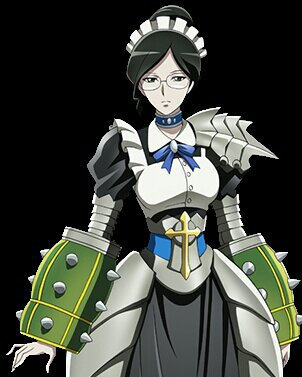

Yuri Alpha is a beauty with an intelligent look, wearing glasses and a wide blue necklace. She wears her hair tied into a low-cropped bun at the back of her head. She wears a blue collar around her neck, most likely to keep her head attached to her body since she is a Dullahan.
Lacking a metal plate in front of her skirt, her dress emphasizes mobility rather than defense. She is equipped with spiked gauntlets. 
Yuri Alpha was created by Yamaiko as one of the battle maids, the Pleiades. They served as the last line of defense against intruders. However, because she is unlikely able to stand against enemy players who managed to come this far, her only real purpose was to distract the invaders until the guild members of Ainz Ooal Gown are able to fully prepare for their final stand in the throne room.
Lupusregina Beta is a brown-skinned beauty with an athletic look and red hair tied in two long braids. She wears a maid uniform with short sleeves and long black gloves with a skirt that has a long slit on its left side, revealing thigh high white stockings. She is equipped with an imposing black and silver scepter slung across her back.
Lupusregina Beta was created as one of the battle maids, the Pleiades. They served as a last line of defense against intruders. However, because she is unlikely able to stand against enemy players who managed to come this far, her only real purpose was to distract the invaders until the guild members of Ainz Ooal Gown are able to fully prepare for their final stand in the throne room.
Is a doppelgänger battle maid and member of the Pleiades, the battle maid squad of the Great Tomb of Nazarick. She is the creation of Nishikienrai, one of the original nine founders of Ainz Ooal Gown.
She is also known as Nabe, a magic caster and Momon's adventurer partner of Darkness. As an adamantite ranked adventurer, she is one of the most powerful adventurers in the Sorcerer Kingdom.
Like many others in Nazarick, Narberal views humans as nothing more than low-class creatures. The only human exempt from Narberal's contempt is her sister Aureole Omega. Though she dislikes the thought of killing humans, she will not hesitate to do so if there is no reason to let them live, or unless given an order by Ainz. This makes Narberal one of the two, along with her sister Solution Epsilon, an "extremely dangerous" member of the Pleiades.
CZ Delta is a girl that is short in stature and has red-gold straight long hair. She wears an eyepatch over her left eye, while her right eye has an emerald color and target-mark on the pupil. Her face is very delicate, it looks as if it was artificially crafted by hand. She wears accessories with military camouflage patterns. While her face is beautiful, she does not show her emotions and talks in a flat tone.
Her attire is similar to that of Narberal and Yuri. However, the biggest difference between her attire and theirs are her urban camouflage accessories and the cute sticker attached to a corner of her skirt with '1 yen' written on it. The other significant difference would be the white gun she often has holstered on her waist like how one would wear a sword.
Is a slime battle maid and member of the "Pleiades Six Stars," the battle maid squad of the Great Tomb of Nazarick. She was created by Herohero.
Solution thinks of humans as food and toys. She loves to swallow humans alive and enjoys the suffering and struggling of her victims. She does not like the screams of humans so she shuts her victims' throat with her body. She is, along with Narberal Gamma, one of the two "extremely dangerous" Pleiades.
She is also good at disguising her nature, acting like a childish and rude lady when she was out to get information with Sebas. It seems that her true nature is quite logical, suggested by her complaint about inefficient behaviors of Sebas or Entoma.
Is an arachnid battle maid and member of the "Pleiades Six Stars," the battle maid squad of the Great Tomb of Nazarick. She was created by Genjiro.
Entoma has the appearance of a young girl wearing traditional Japanese attire. Her red eyes are cute, but they never move or blink. She has mauve hair with twin chignon. Entoma never exposes bare skin except for her "face."